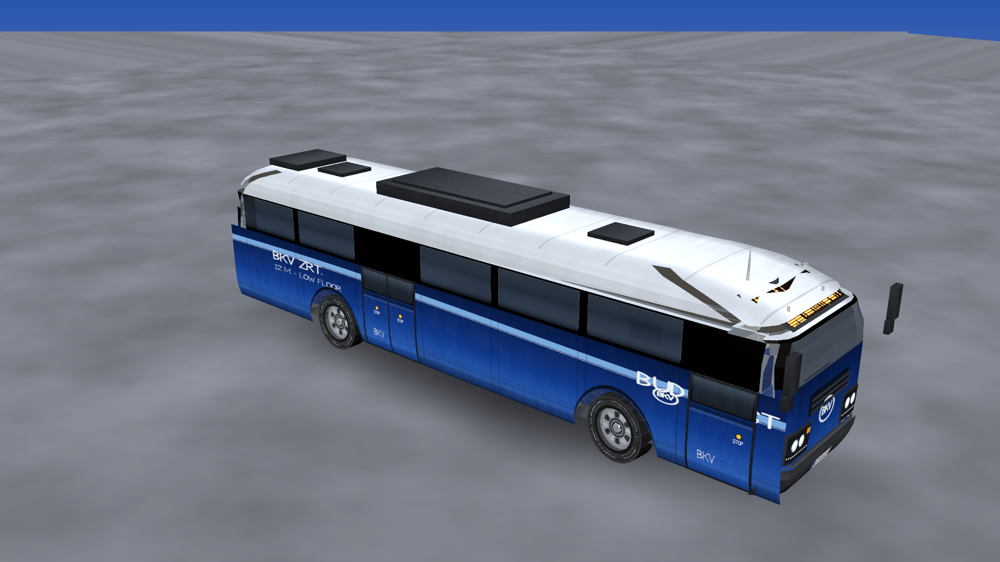
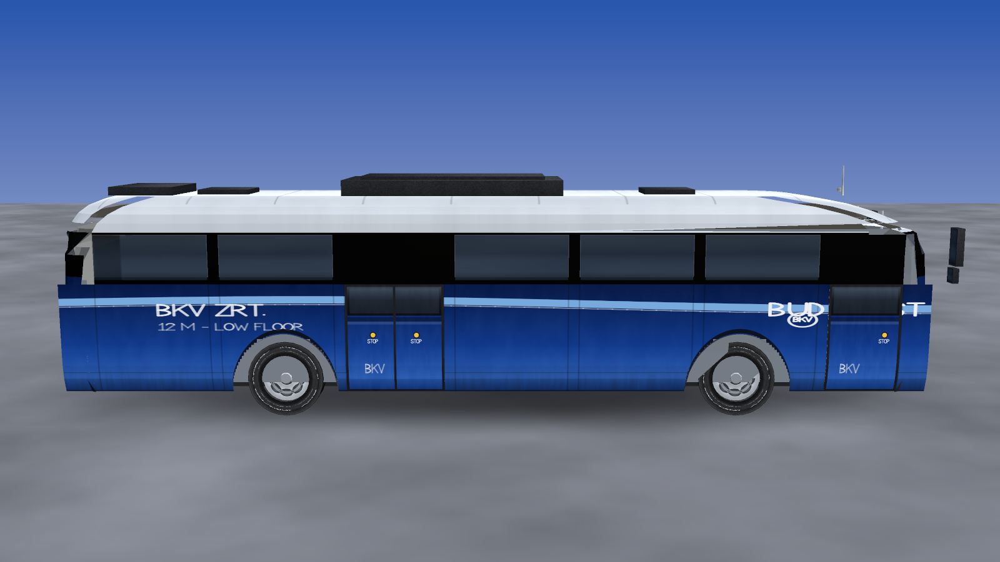
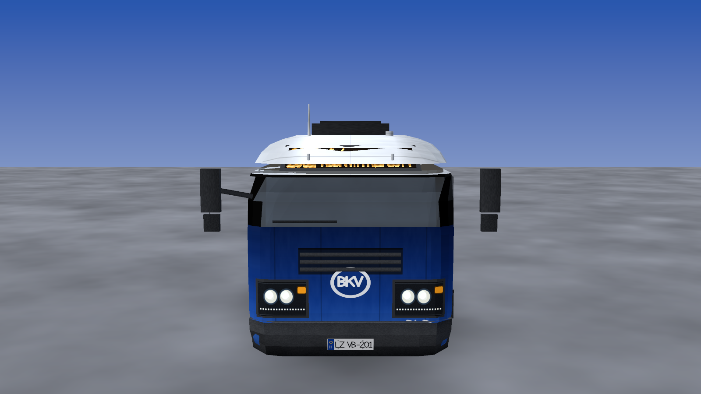
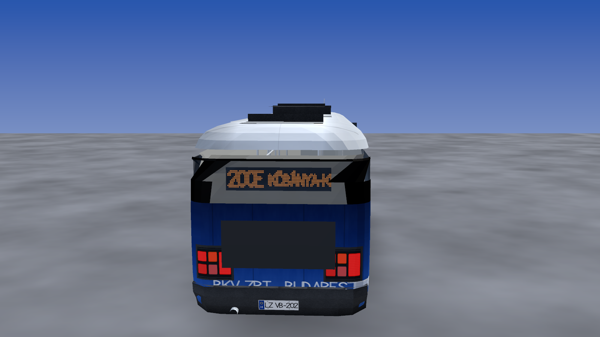
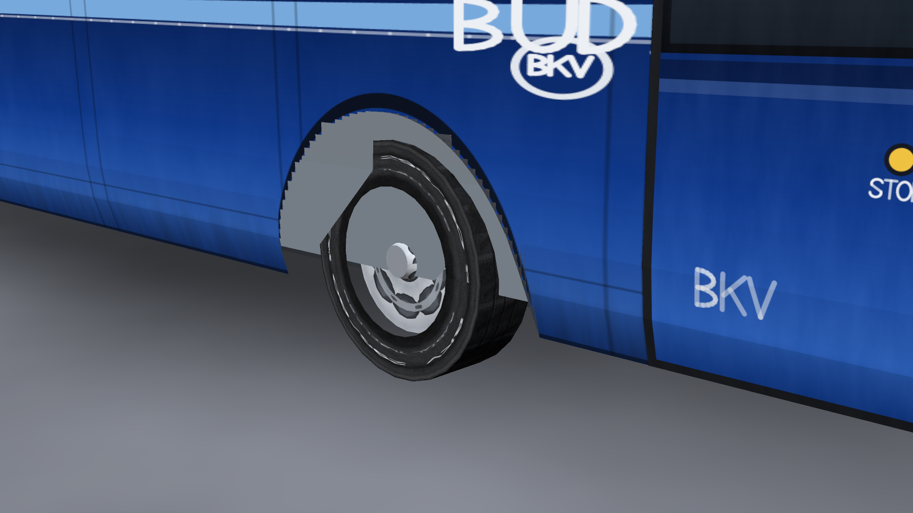
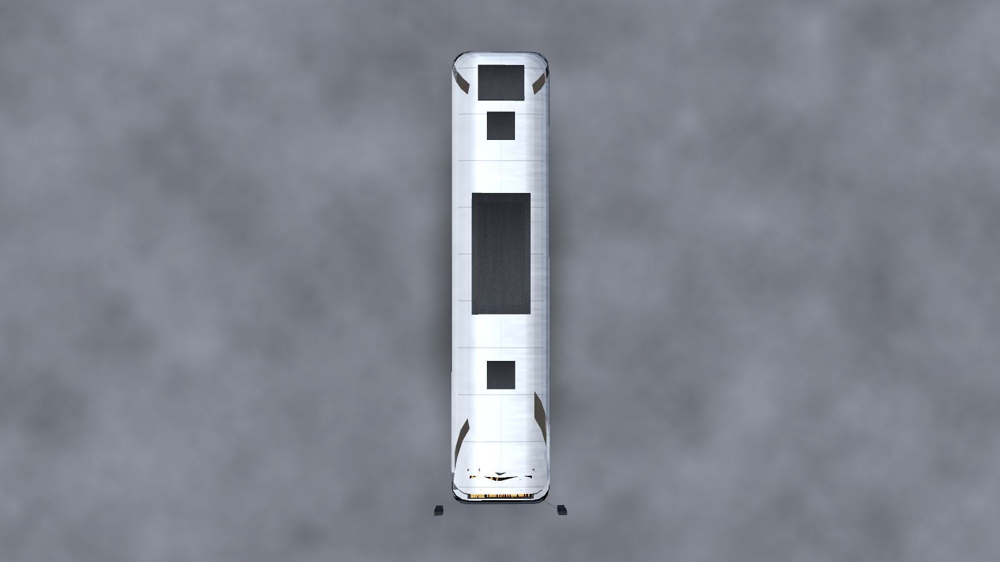

BKV city bus — procedural 3D model
A 12 m low-floor city bus in Budapest (BKV) blue livery — the kind that runs on routes 5, 7, 8E, 105 and 200E. The mesh is lofted and stitched by JavaScript and every texture is painted pixel by pixel in JavaScript: no downloaded models, no image assets, no build step on GitHub's side.
- ≈9 400 triangles · 27 materials
- 26 procedurally painted PNG textures
- real wheel-arch cut-outs & interior
- route 200E → Kőbánya-Kispest M
- three.js vendored, works offline
drag to orbit · scroll to zoom · day/night, wireframe and OBJ modes in the panel
Pre-rendered views


hero

side (doors)

front

rear

wheel arch

roof
These are rendered by budapest-bus/tools/render-preview.mjs, a
dependency-free software rasteriser, so they can be produced without a GPU or a browser.
How it is made
Mesh
One lofted surface: a plan-view outline whose half width, front and rear extents and corner radius are functions of height. Quads between consecutive rings are routed to paint, window band, glass or roof. Panels, doors, lamps, mirrors and the interior sit on top of that shell.
Textures
A small software raster image (anti-aliased lines, polygons, gradients, grime) plus a hand-built single-stroke font that also covers Hungarian accents — so the destination reads “Kőbánya-Kispest M” on a real dot-matrix LED panel.
Why it is like this
Everything is generated from code on purpose: the model, the paint and the tooling
live in one repository, diff-able and testable. tests/geometry.test.mjs
checks 144 000 invariants of the mesh.